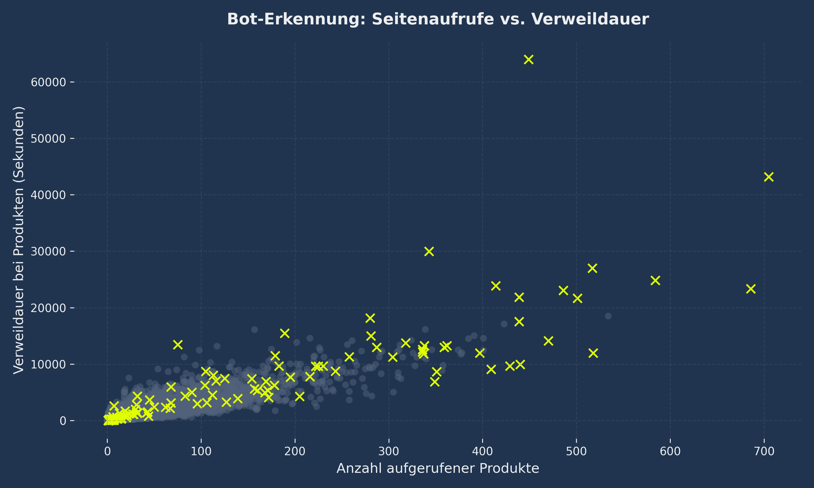

4 Advanced Business Cases
🎫 Smart Vouchers
Anstatt Rabattcodes nach dem Gießkannenprinzip zu verteilen, filtert das Modell gezielt "Wackelkandidaten" (Kaufwahrscheinlichkeit 40%-60%) heraus, um Conversion effizient zu pushen.

✂️ Feature Selection
Eine Reduktion von über 60 Spalten auf die absoluten Top 3 Features (PageValues, ExitRates, Duration) liefert eine nahezu identische Genauigkeit und spart drastisch Serverkosten.

🍂 Saisonale Modelle
Das Kaufverhalten im Q4 (Black Friday / Weihnachten) weicht extrem vom Rest des Jahres ab. Daher splitten wir den Datensatz, um spezialisierte saisonale Netze zu trainieren.

🤖 Bot-Detection
Mithilfe eines Isolation Forest Algorithmus identifizieren wir die Top 1% der auffälligsten Besucher. Dies entlarvt Scraper-Bots, die hunderte Seiten in wenigen Sekunden aufrufen.

Ausblick: First-Party Data
1. Customer Lifetime Value (CLV)
Durch User-Accounts wechseln wir von reiner Session-Klassifikation zur Regression. Die KI prognostiziert, wie viel Umsatz ein eingeloggter Kunde in den nächsten 12 Monaten generieren wird.
2. Churn Prediction
Die KI warnt uns automatisch, bevor ein treuer Stammkunde abwandert. Registriert das Netz z.B. eine starke Abweichung vom üblichen Kaufzyklus, triggert es eine automatische Rückhol-E-Mail.
3. Recommender Systems
Basierend auf Collaborative Filtering empfiehlt die KI Produkte anhand mathematischer Käufer-Ähnlichkeiten (Amazon-Prinzip: "Kunden, die X kauften, kauften auch Y").
4. RFM-Segmentierung
Mittels Unsupervised Learning (z.B. K-Means) werden Kunden vollautomatisch in wertvolle Segmente wie "VIPs" oder "Schnäppchenjäger" geclustert.